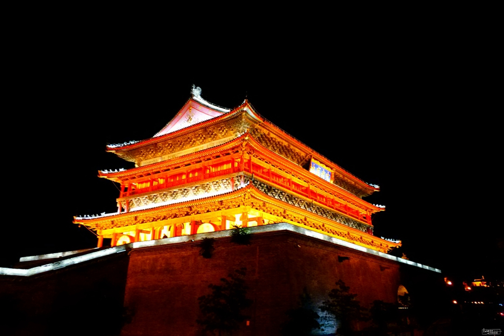
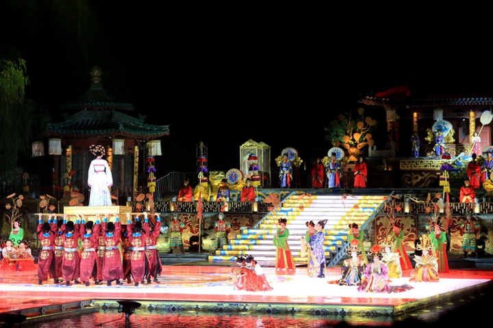
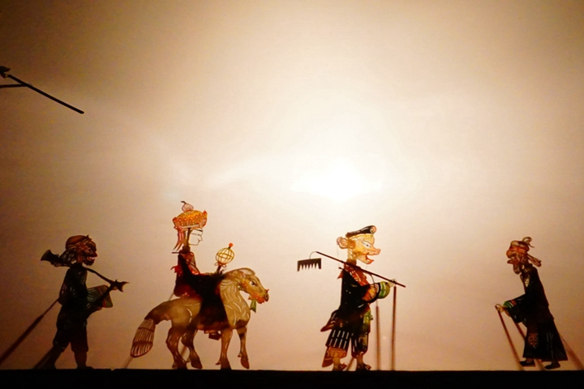

-
千风万景中遇见你 - 首页
- 精选
- 邂逅
-

- 消息

目的地>中国>西安
Xi An


西安

西安天气
晴 11℃~22℃
142人来过这里
26篇旅游日志
26篇旅游日志

景点介绍
西安市位于中国大陆腹地黄河流域中部的关中盆地，面积9983平方公里。人们常说：二十年中国看深圳，一百年中国看上海，一千年中国看北京，而五千年中国则看西安。
西安与雅典、罗马、开罗并称为世界四大古都，从公元前11世纪到公元10世纪左右，先后有13个朝代或政权在西安建都及建立政权，历时1100余年。1981年联合国科教文组织把西安确定为世界历史名城。 公元前二世纪前后，汉武帝为了扩大了西汉地域，派张骞两次出使西域，开创了由西安出发连接欧、亚、非三洲的丝绸之路。这是中国历史上首次与西方进行的最大规模的经济文化交流活动。
丝绸之路东起古长安，由河西走廊到敦煌分为南北两路穿过新疆，一直到欧洲，总长7000多公里，成为此后一千多年间中国与西方交流的主要干线。在中国古代史上写下了辉煌的篇章。 作为中国著名的旅游中心城市，西安首先以人文景观数量巨大，种类繁多，分布广泛，价值珍贵驰誉中外。
景点美照



- 2016-2017© 遇见网® yujian.com All rights reserved.Version v1.00
遇见网为旅行爱好者提供记录自己旅途见闻并展示的个人空间。